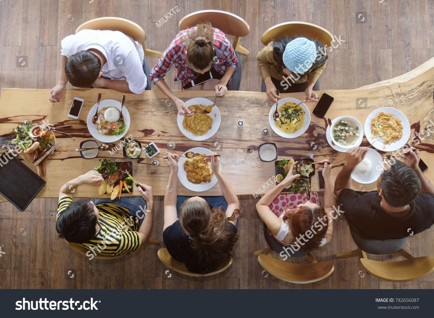

Food, a beautiful blessing from the lord. It has a function of healing you from a long day. provide u strength. Most importantly, without a good recipe, it will fail it is propous for spoiled citzien, who live in a developed country.
